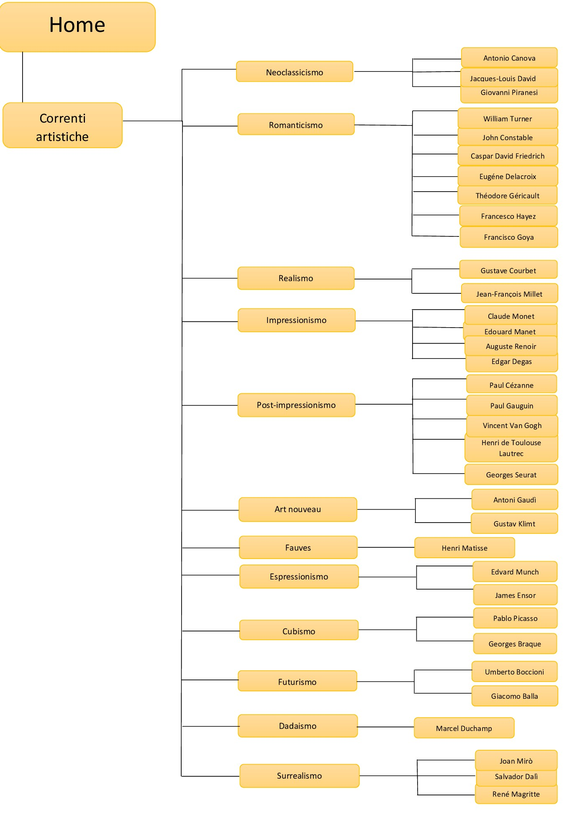

Abstract
“Curiosità d’artista” è un sito originale e intuitivo che ha lo scopo di mettere a conoscenza chiunque sia appassionato d’arte e non, degli aneddoti e delle curiosità riguardanti i grandi della Storia dell’arte. La grafica semplice e colorata permette poi di passare da un’artista all’altro con facilità, garantendo all’utente l’apprendimento di correnti artistiche e opere del passato (divertendosi). Il punto di forza è sicuramente la semplicità e la chiarezza delle informazioni che fanno sì che l’utente spazi tra i contenuti del sito senza che perda l’interesse.
Project Management Plan
Benchmarking
Obiettivi
L’obiettivo principale è quello di far conoscere al maggior numero possibile di persone coloro che hanno scritto la Storia dell’arte e hanno contribuito ad arricchire il nostro patrimonio culturale. Si tratta però di farli conoscere sotto una luce diversa per far capire che anche i luminari sono persone come noi, con i loro difetti e stranezze.
Target utente
Il target è rappresentato principalmente da chi è appassionato d’arte, ma il sito si rivolge anche a coloro che hanno semplicemente voglia di conoscere.
Competitors
Zebrart È un sito che promuove la valorizzazione del patrimonio culturale attraverso la stesura di articoli che riguardano diversi temi, quindi non si concentra solamente sull’arte. In questo competitor le curiosità non rappresentano il punto focale, infatti se ne parla solamente in un breve articolo, il quale presenta diversi difetti. Tra questi troviamo principalmente una grafica poco curata e molti font contrastanti tra loro. Inoltre, le informazioni sono poche e confusionarie, tanto che gli artisti non sono distinti per corrente o periodo.
Libreriamo È un sito che si indirizza a chi ama leggere e scrivere, non è un caso che si parli di una community. I temi affrontati sono vari e l’unica parte che coinvolge le curiosità degli artisti è anonima: i colori utilizzati sono il bianco e il nero; e le informazioni sono distribuite in modo confusionario senza far riferimento a un periodo storico o a una corrente artistica. Sono presenti alcune immagini di artisti, ma prive di dati che possano ricondurli a individuare l’identità di un pittore (chi non li conosce non sa chi siano quelli nella foto).
Culturaesvago È un sito che “propone cultura per tutti”: dalla filosofia alle ricette, dalle barzellette alla poesia e quindi si occupa di ambiti diversi. La sezione dedicata agli aneddoti, nonostante questi ultimi siano numerosi per ogni artista, è poco accattivante poiché la grafica è minimalista e poco curata. Gli artisti che vengono citati sono numericamente pochi e ancora una volta non vengono collocati in un periodo storico.
Struttura e layout
Architettura del sito
Wireframe


Look and Feel
Essendo un sito riguardante l’ambito artistico, la palette di colori è molto ampia, infatti ad ogni corrente è associato un colore diverso che riprende principalmente quelli dell’arcobaleno (rosso, arancione, giallo, verde, blu e viola) con alcune sfumature di questi ovvero l’azzurro, il rosa, il grigio, ai quali si aggiungono i non colori, bianco e nero.
Ho utilizzato poi per la pagina principale un arancio pastello, un colore che non affaticasse il lettore e che allo stesso tempo potesse dare quella nota accesa che caratterizza l’anima del sito.
I font utilizzati sono due:
- “Abril Fatface”, cursive, per far risaltare i titoli e le parole più importanti dando loro un tocco artistico, curato ed elegante
- “Open Sans”, sans-serif, utilizzato invece per i paragrafi e le descrizioni in modo che fossero chiare e pulite
Al tutto si aggiungono poi i disegni degli artisti che ho realizzato per fare in modo che le opere venissero collegate immediatamente al volto dei propri autori.
Linguaggi e strumenti
Linguaggi
Html + Css
Strumenti
- SublimeText come text editor;
- One page love è il sito che ha supportato la progettazione di Curiosità d’artista;
- Adobe Illustrator per la realizzazione dei volti degli artisti, le “macchie di tinta” delle correnti e per la realizzazione dell’IGTV;
- Adobe color per la palette dei colori;
- Google font per i font;
- Word per la realizzazione del diagramma ad albero;
- Wireframe cc per i wireframe;
- Github ha permesso la pubblicazione online;
- Canva per il post su facebook e instagram;
- ????Google Analytics per le visualizzazioni
Communication Strategy
Background
Com’è emerso dall’analisi dei competitors, non esiste un sito che si focalizzi solamente sulle curiosità e sugli aneddoti degli artisti, ma semplicemente sezioni o articoli riguardo a questa tematica. In più, questi ultimi sono poco curati e soprattutto danno per scontato che l'utente conosca i grandi dell’arte e che sappia sia la corrente a cui appartengono, sia il periodo storico in cui questa si sviluppa. Sono poi scarse le fotografie o immagini che possano rappresentare i volti dei pittori. Questi siti presentano quindi un target ben definito ma ristretto, ovvero persone competenti dell’ambito artistico.
Obiettivi comunicativi
L’obiettivo principale è quello di diffondere la conoscenza riguardo l’ambito artistico con semplicità. Il sito di fatto mira a coinvolgere sia chi è già appassionato a questo mondo, sia chi, invece, non si è mai approcciato ad esso ma ha voglia di immergervisi. La chiarezza e l’esaustività delle informazioni sono il punto forte di questo sito, poiché, soprattutto per chi non ha tra le proprie passioni l’arte, avere lunghe descrizioni e paragrafi potrebbe far perdere l’interesse, per questo motivo sono riportate informazioni chiare, brevi ed essenziali.
Target audience e messaggio
Il target utente primario si individua negli amanti d’arte. Si parla della fascia a partire dai 16 anni circa quando si inizia ad essere abbastanza maturi per comprendere, o meglio, apprezzare le opere, fino ai 99 anni e oltre se l’utente è interessato a questo ambito. Il target secondario, ma comunque importante, è quello che comprende chiunque voglia approcciarsi al mondo dell’arte e sia curioso di conoscere e apprendere. Per quanto riguarda le fasce più giovani, queste vengono raggiunte tramite i social come Instagram e Facebook, il quale permette anche di raggiungere gruppi di persone dai 35 ai 65+ anni. Per quanto riguarda invece gli utenti che possono essere over 65, il metodo più efficace sembra essere il passaparola su whatsapp.
Promozione
Per promuovere il sito sono stati utilizzati social come Instagram e Facebook, oltre al passaparola tramite Whatsapp.
Valutazione dei risultati
Ho pubblicato dei post sui social Instagram e Facebook. L'obiettivo prefissato era quello di ottenere 50 like al post di Instagram, e 15 like e 10 condivisioni al post di Facebook. Obiettivi raggiunti con successo poichè il post di Instagram ha raggiunto 122 like, mentre quello di Facebook 23 like e 17 condivisioni.


Vi sono stati poi feedback positivi da parte di utenti di diverse fasce di età e questo mi ha fatto capire che il sito ha raggiunto l'obiettivo di diffondere la conoscenza dell'ambito artistico e accrescere la curiosità tra le persone.
"Mi hai fatto conoscere cose che non sapevo", "E' fatto molto bene, molto bello lo stile minimal e i personaggi stilizzati", "Bello! Da ex studentessa di liceo artistico apprezzo molto!", "E' bellissimo, ho letto tutto. La cosa che apprezzo è che è sintetico e fornisce le informazioni più rilevanti. E' come un ripasso generale di quelle correnti." "Sito molto gradevole e invitante"
Questi sono alcuni dei commenti che ho ricevuto e che mi hanno fatto capire che il messaggio di "Curiosità d'artista" è arrivato ad un pubblico vasto, ed è stato apprezzato.
Sitografia e bibliografia
Cricco, G., Di Teodoro, F.P (2017). Itinerario nell'arte. Bologna: Zanichelli.
Bugler, C.(2017)The Art Book London: Dorling Kindersley (trad.it Il libro dell'Arte, Gribaudo, Milano, 2017)
Courtauld, S.(2010)Famous Paintings London: Usborne Publishing (trad.it Quadri Famosi, Edizioni Usborne, 2011)
Gali news Frasi celebri Le citazioni Mikipedia Settemuse Wikipedia Iconamagazine Stilearte Best5 Due minuti di arte